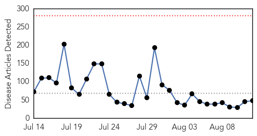
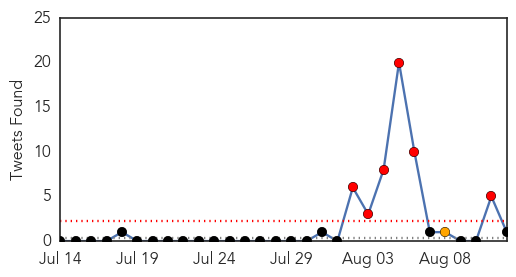
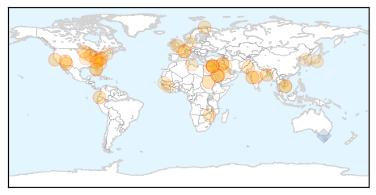
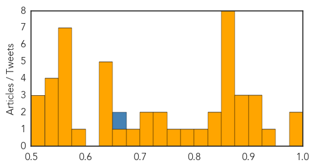

Influenza
30-Day Web Trend
0 alerts, 0 warnings

30-Day Twitter Trend
1 alerts, 0 warnings

Article Locations

Article Confidences

Top Articles:
Top Tweets:
-
No tweets found for Aug 12, 2014
Unknown
30-Day Web Trend
0 alerts, 0 warnings

30-Day Twitter Trend
6 alerts, 1 warnings

Article Locations
Article Confidences
Top Articles:
- 0.988
- Diarrhoea outbreak under control for now: Officials
- 0.981
- MoH reports 2 MERS cases after lullHealthcare
- 0.926
- Local News - WDBJ7.com Central and Southwest VA
- 0.917
- Chicago Tribune
- 0.917
- Chicago Tribune
- 0.902
- In encephalitis hub, no entomologists
- 0.895
- Rare tick-borne disease closes Flagstaff summer camp
- 0.892
- Gaza hospitals, health facilities need urgent donor support: UN agency
- 0.884
- Flagstaff Camp Closed When Students Develop Tick-Borne Disease
- 0.870
- Gaza hospitals, health facilities need urgent donor support
- 0.869
- A simple test could identify people with vCJD
- 0.866
- MAGNITUDE 5.1 EARTHQUAKE STRIKES ECUADOR'S CAPITAL OF QUITO -USGS
- 0.866
- Robin Williams found by assistant hanged to death at California home -sheriff's official
- 0.866
- Saudi king congratulates new Iraqi PM-designate
- 0.866
- Car bombs kill 12 people in Baghdad
- 0.866
- U.S. to provide $180 million for food in South Sudan
- 0.866
- France says Russian convoy to Ukraine may be "cover" for incursion
- 0.827
- WHO Regional Director visits Gaza and urges support for the health system - occupied Palestinian territory
- 0.825
- The Worldwide Threat of Tuberculosis
- 0.801
- Central Collegiate students, staff to be tested for tuberculosis
- 0.781
- How to Survive Tuberculosis
- 0.752
- Poliovirus vaccination for troops
- 0.744
- Time to Ban Petting Zoos - with E. coli?
- 0.737
- In het Noorden: de heropleving van de Sami-cultuur
- 0.715
- Zimbabwe's health system in crisis
- 0.705
- Official Warn About Algae Blooms
- 0.681
- Traveling petting zoo linked to E. coli outbreak infecting 13
- 0.660
- ‘Silent killer’ returns to UP with 26.5 pc rise in cases
- 0.650
- National disease outbreak from handling live chickens spreads to N.H.
- 0.648
- Dr. Robert Follweiler Now Offers Residents in the Treasure Coast, FL Area Suffering from Gum Disease, a Less Invasive Alternative to Gum Surgery
- 0.633
- Coalition launches campaign to get kids vaccinated against HPV
- 0.633
- Man may have been exposed to tularemia near Windsor
- 0.628
- NH salmonella infections tied to national outbreak
- 0.586
- Third Case of FMD Reported in South Korea Since 2011
- 0.560
- Syrian Kurds battle to rescue Iraq's stranded Yazidis
- 0.557
- Libya: Complex Emergency DREF Operation Operations nº MDRLY001; Emergency Plan of Action (EPoA) - Libya
- 0.551
- US sends 130 more military advisers to Iraq
- 0.551
- Obama urges calm after police shoot unarmed black teen
- 0.551
- Video: Tracking down Liberia’s Ebola carriers
- 0.551
- Liberia to get experimental drug as Ebola toll tops 1,000
- 0.551
- Egypt protest crackdown likely a 'crime against humanity'
- 0.549
- Maliki tells troops not to 'intervene' in Iraqi leadership crisis
- 0.549
- Jewish group asks France to rename ‘Death to Jews’ hamlet
- 0.548
- Listeria in deli meats kills 12 in Denmark
- 0.528
- Fairfax, VA Patients of Dr. J. Alexander Withers Now Have Access to a Less Invasive Laser–Based Procedure to Treat Gum Disease
- 0.521
- Lone Star tick could prove a scourge to meat-lovers everywhere
- 0.518
- Drug-resistant malaria a growing threat
- 0.507
- Petting zoo at Minn. festivals sickens 13 with E. coli
Top Tweets:
- 0.656
- RT: Flu vaccines can't give you the flu. Read why and see more flu myths debunked here: http://t.co/v1UEmaW2Mi fluishere